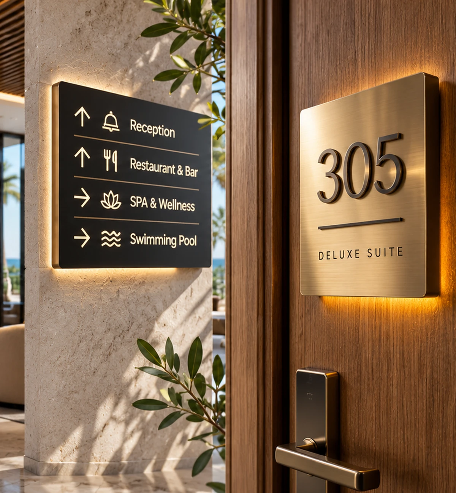

01ГОСТИНИЧНЫЕ ТАБЛИЧКИ
01ГОСТИНИЧНЫЕ ТАБЛИЧКИНомерки гостиничных номеров
Номерки гостиничных номеров
Индивидуальные номера комнат из металла, акрила, дерева и комбинированных материалов. Настенные, дверные и объёмные варианты.

NTEO / ГОСТИНИЧНЫЕ ТАБЛИЧКИ / КИПР
Создаём таблички и навигацию для отелей на Кипре — от номерков на дверях до указателей ресторанов, СПА и бассейнов. NTEO проектирует и изготавливает гостиничные номерки, таблички «Не беспокоить», обозначения этажей, ресепшена, гостевых и служебных зон для отелей, курортов, апарт-отелей и вилл. Подбираем материалы и отделку под интерьер и фирменный стиль, чтобы все элементы выглядели как единая продуманная система. Производство и монтаж в Лимассоле, Пафосе, Никосии, Ларнаке, Айя-Напе и Протарасе обсуждаются в зависимости от проекта.

01 / КАТЕГОРИИ ГОСТИНИЧНЫХ ТАБЛИЧЕК
NTEO предлагает изготовление гостиничных табличек и навигации на Кипре для отелей, курортов, апарт-отелей и вилл. Производим номерки гостиничных номеров, таблички на двери и подвесы «Не беспокоить» / «Уберите номер», указатели этажей, обозначения ресепшена, ресторанов, баров, СПА, бассейнов, парковки и служебных помещений. Разрабатываем единый дизайн гостиничной навигации с учётом интерьера, фирменного стиля и условий эксплуатации; подбираем акрил, металл, дерево, композит, гравировку и объёмные элементы. Заказать гостиничные таблички, номерки и навигационные указатели можно для объектов в Лимассоле, Пафосе, Никосии, Ларнаке, Айя-Напе, Протарасе и других районах Кипра. Проектирование, изготовление и возможность монтажа согласуем под ваш объект.
01ГОСТИНИЧНЫЕ ТАБЛИЧКИНомерки гостиничных номеров
Индивидуальные номера комнат из металла, акрила, дерева и комбинированных материалов. Настенные, дверные и объёмные варианты.
 02ГОСТИНИЧНЫЕ ТАБЛИЧКИ
02ГОСТИНИЧНЫЕ ТАБЛИЧКИДверные таблички и подвесы
Do Not Disturb, Make Up Room и Please Service Room — функциональные дверные подвесы и таблички в стиле отеля.
 03ГОСТИНИЧНЫЕ ТАБЛИЧКИ
03ГОСТИНИЧНЫЕ ТАБЛИЧКИRoom & Suite Name Signs
Таблички для Suite, Deluxe Room, Apartments и вилл — с отделкой и типографикой под интерьер гостиницы.
 04ГОСТИНИЧНЫЕ ТАБЛИЧКИ
04ГОСТИНИЧНЫЕ ТАБЛИЧКИОбозначения этажей
Номерные обозначения этажей, крыльев и корпусов, согласованные с общей системой навигации отеля.
 05ГОСТИНИЧНЫЕ ТАБЛИЧКИ
05ГОСТИНИЧНЫЕ ТАБЛИЧКИRestaurant & Bar Signs
Обозначения ресторанов, кафе, баров, лаунжей и террас — от лаконичных дверных знаков до выразительных настенных панелей.
 06ГОСТИНИЧНЫЕ ТАБЛИЧКИ
06ГОСТИНИЧНЫЕ ТАБЛИЧКИSPA & Pool Signs
Навигация для SPA, wellness-зон, бассейнов, саун, душевых и раздевалок.
 07ГОСТИНИЧНЫЕ ТАБЛИЧКИ
07ГОСТИНИЧНЫЕ ТАБЛИЧКИReception & Concierge Signs
Оформление стойки регистрации, консьерж-службы, Guest Relations и зон обслуживания гостей.
 08ГОСТИНИЧНЫЕ ТАБЛИЧКИ
08ГОСТИНИЧНЫЕ ТАБЛИЧКИИнформация для гостей
Room Service, Breakfast Hours, Wi-Fi, House Information и другие сообщения, которые помогают гостям во время проживания.
 09ГОСТИНИЧНЫЕ ТАБЛИЧКИ
09ГОСТИНИЧНЫЕ ТАБЛИЧКИПарковочные таблички отеля
Указатели Guest Parking, Staff Parking, VIP Parking, Drop-off и обозначения зарядных мест — по проекту объекта.
 10ГОСТИНИЧНЫЕ ТАБЛИЧКИ
10ГОСТИНИЧНЫЕ ТАБЛИЧКИHousekeeping & Staff Signs
Обозначения Housekeeping, Laundry, Staff Only, Service Area, Storage и технических помещений.
 11ГОСТИНИЧНЫЕ ТАБЛИЧКИ
11ГОСТИНИЧНЫЕ ТАБЛИЧКИHotel Building & Villa Numbers
Адресные и номерные таблички для корпусов, отдельных вилл, апартаментов и гостевых домов.
 12ГОСТИНИЧНЫЕ ТАБЛИЧКИ
12ГОСТИНИЧНЫЕ ТАБЛИЧКИBalcony & Terrace Signs
Обозначения частных террас, балконов, rooftop-зон и приватных площадок отдыха.
 13ГОСТИНИЧНЫЕ ТАБЛИЧКИ
13ГОСТИНИЧНЫЕ ТАБЛИЧКИGuest Rules & Notices
Таблички с правилами отеля, режимом работы, информацией для гостей и уведомлениями для общественных зон.
02 / МАТЕРИАЛЫ И ОТДЕЛКА
Прозрачный, матовый, цветной и многослойный акрил.
Алюминий и нержавеющая сталь, включая шлифованные поверхности.
Тёплые фактуры и архитектурные сочетания.
Объёмные буквы, гравированные надписи и рельефные детали.
03 / ОТ ЗАДАЧИ ДО МОНТАЖА
Расскажите о типе объекта, фирменном стиле, планировке и необходимых изделиях. Обсудим состав комплекта, материалы, количество, производство и возможность монтажа.
04 / NTEO
Укажите расположение объекта, тип отеля и какие таблички или указатели вам нужны. Планы и примеры можно отправить через WhatsApp.
Можно написать напрямую: WhatsApp +357 97 587065
05 / FAQ
Да. Можно объединить номерки, дверные таблички, обозначения гостевых и служебных зон в согласованный комплект. Состав проекта определяем с учётом объекта, дизайна и задач персонала.
В зависимости от задачи можно рассмотреть акрил, алюминий, нержавеющую сталь, отделку под латунь, ПВХ, композит и дерево. Выбор зависит от места установки, условий эксплуатации и ухода.
Да. Типографику, цвета, размеры, материалы и отделку можно подобрать под фирменный стиль гостиницы и концепцию интерьера.
Возможность монтажа можно обсудить для Лимассола, Пафоса, Никосии, Ларнаки, Айя-Напы, Протараса и других районов. Доступность и стоимость зависят от адреса и объёма проекта.